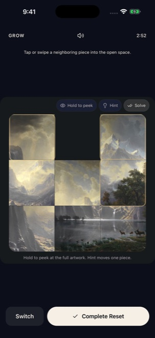
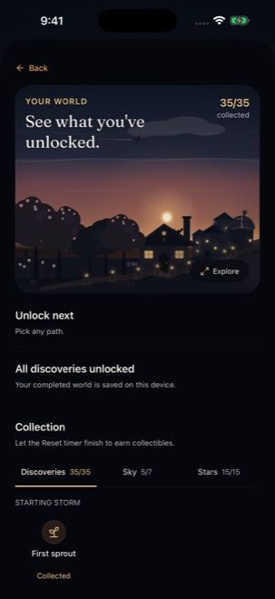
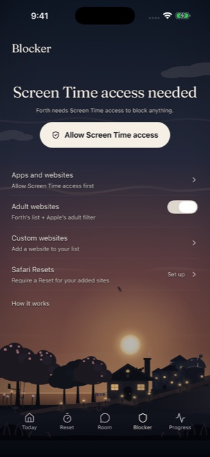

Forth
A little space.
A way forward.
Trying to quit porn? Reach for a short visual game when an urge hits, and give yourself a moment to choose what comes next.
Download for iPhone Available on the App Store · Subscription requiredAn urge hits.
You have a next step.
Forth puts something simple in your hands: a short visual game, a little focus, and a place to begin again.
Start with a quick assessment. Forth puts together your personal plan.



Real app screens · Example progress
Your life.
Your business.
Your plan, reflections, and progress stay on your phone.
If you choose to post in The Room, that post is shared with the community under a generated handle. Purchases are handled by the billing provider.
Read our privacy policyA few things
to know.
Have another question?
We’re here to help.
What is a Reset?
A Reset is a short, timed visual game you open when an urge hits. You can fit shapes, match patterns, or rebuild a painting. The games are unscored, and there’s no failing a level.
What happens if I slip?
Log what happened and keep going with your plan. Your completed effort, world discoveries, and collected paintings stay with you.
How does blocking work?
Forth uses iOS Screen Time to restrict selected apps and websites after you grant permission. Safari features need a separate extension setup. Blocking is optional, and you stay in control of your settings.
Does Forth require a subscription?
Yes. You can complete the assessment and try a short game sample before subscribing. You’ll see the current price and billing terms before you choose to purchase.
Take the next
few minutes back.
Start where you are. Go Forth.
Download for iPhone Available on the App Store · Subscription required